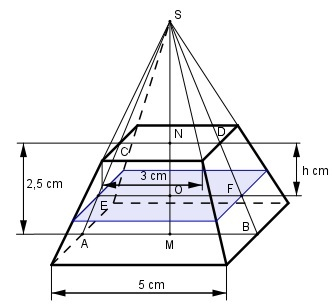

Aufgabe 256 Wie groß ist h, wenn das Volumen des Pyramiden- stumpfes halbiert werden soll?

2,5 V = ----- * (25 + 5 * 3 + 9) cm3 3 V = 40,8 cm3 V 40,8 cm3 Vhalb = --- = ----------- = 20,4 cm3 2 2 Strahlensatz: AB MS ---- = ---------- CD MS - MN Über Kreuz multipliziert: AB * (MS - MN) = CD * MS cm 5 * (MS - 2,5) = 3 * MS cm 5 * MS - 12,5 = 3 * MS cm |-3*MS 2 * MS = 12,5 cm |:2 MS = 6,25 cm Strahlensatz: AB MS ---- = --------- EF MS - MO Über Kreuz multipliziert: AB * (MS - MO) = EF * MS cm 5 * (6,25 - MO) = EF * 6,25 cm 31,25 - 5 * MO = EF * 6,25 cm |+5*MO 31,25 = EF * 6,25 cm = 5 * MO cm|-EF*6,25 31,25 - EF * 6,25 cm = 5 * MO cm |:5 MO = 6,25 - 1,25 * EF cm Vhalb = cm3 Vhalb = cm3 6,25 - 1,25*EF 20,4 = ---------------- * (25 + 5*EF + EF2)cm3 |*3 3 61,2 = (6,25 - 1,25*EF) * (25 + 5*EF + EF2) cm3 61,2 = 156,25 + 31,25 EF + 6,25 EF2 - 31,25 EF - - 6,25 EF2 - 1,25 EF3 cm3 61,2 = 156,25 - 1,25 EF3 cm3 |+1,25*EF3 61,2 + 1,25 * EF3 = 156,25 cm3|-61,2 1,25 * EF3 = 95,05 cm3|:1,25 EF3 = 76,04 cm3 |∛ EF = 4,24 cm MO = 6,25 - 1,25 * EF cm = = 6,25 - 1,25 * 4,24 cm = 0,95 cm h = MN - MO = 2,5 cm - 0,95 cm = 1,55 cm